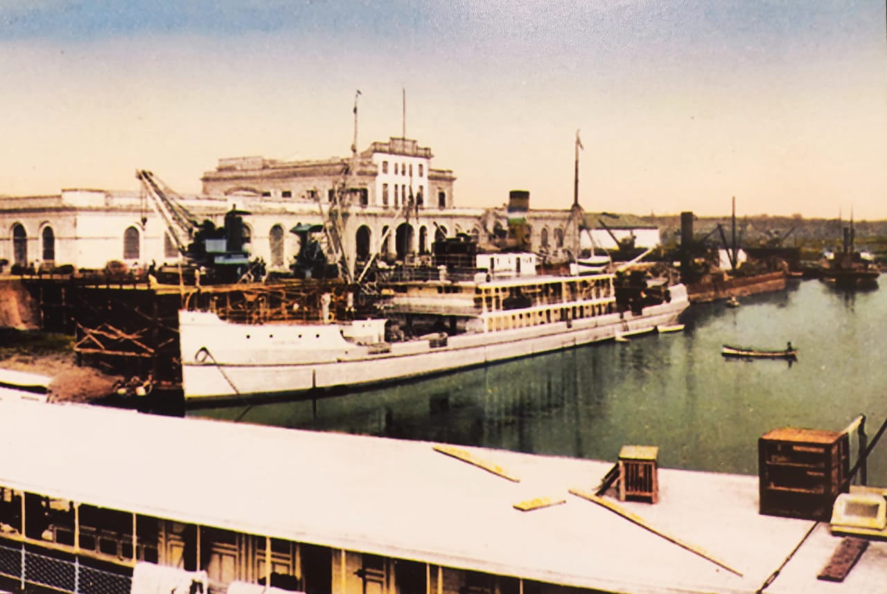

Referentes históricos indican que la bahía de Asunción, desde la época de los conquistadores españoles, fue un importante apostadero de navíos. El sitio donde hoy se ubica la ciudad de Asunción, era habitado por los “carios” familia de los guaraníes. Luego, se fundó el Fuerte Nuestra Señora de la Asunción por Juan de Salazar y Espinosa el 15 de agosto de 1537, el cual daría vida a la ciudad, con la creación del Cabildo (1541)
Durante el gobierno del Presidente Don Carlos Antonio López, muchos profesionales europeos fueron contratados, entre los que se pueden citar a: Arquitectos e Ingenieros, Artistas, Técnicos industriales, etc. y de esta manera, se observaba el inicio y el cambio del perfil arquitectónico y urbanístico de la ciudad de Asunción. Muchos opinaron la buena calidad de las obras de construcciones realizadas, entre las que se puede citar: El Palacio de Francisco Solano López, entre otros.
El inglés Jorge Federico Masterman, en su libro " Siete años de aventuras en el Paraguay" (Imprenta Americana-Buenos Aires 1870) escribió la siguiente opinión: "La Aduana es tan espantosamente fea, el terreno en declive y las columnatas con sus veinte y dos (22) arcos y pesada cornisa, parece que quisiera zambullirse al río"
Al término de la Guerra contra la Triple Alianza (Año 1870), Asunción comenzó su proceso de reconstrucción edilicia. A finales del siglo XIX e inicios del siglo XX, comenzó a llegar un flujo considerable de inmigrantes extranjeros, y la ciudad tuvo un importante cambio en su panorama urbano. No existen documentaciones que certifiquen los datos de construcción del Puerto.
Según el Abogado Ángel D. Sosa, en su libro "Puerto de Asunción" refiere: "En el año 1890, comienzan los trabajos que incluyeron la edificación de un sólido murallón, tinglados, galpones y algunos muelles de buena madera conocido con el nombre de malacates y accionados por fuerza humana" Anteriormente existían galpones y una serie de precarios muelles, que permitían a los barcos a cargar y descargar mercaderías, o subir y bajar pasajeros".
En dicho material de lectura, también describe: "El primer edificio consistía en dos galpones de planta rectangular alineados, dejando un espacio central totalmente abierto, sin construcción, que cumplía el papel de gran acceso principal, tanto peatonal como vehicular (carros, caballos, etc.) desde las calles que confluían en el mismo (Avenida Colón, Benjamín Constant, el Paraguayo Independiente). Ambos depósitos contaban con recovas, una hacia el muelle y otra hacia la calle. Los techos estaban ocultos detrás de fachadas romanizadas, con arcos de medio punto".
Durante la presidencia del Dr. Juan Gualberto González (1851-1912) quien gobernó el Paraguay en los años 1890-1894, se encargó el proyecto del nuevo edificio de Puertos, a un Ingeniero de apellido Huergo (1892) El mismo, no se llevó a cabo pues los costos eran elevados. Posteriormente otro ingeniero de apellido Hill, presentó un proyecto cuyos costos eran considerados inferiores, lo cual no se pudo llevar a cabo (Memorias del Dr. Audivert).
Al final, el Gobierno asumió los trabajos usando partes de ambos proyectos presentados. En el año 1904, cobra vigor con la instalación de las oficinas de la Dirección Nacional de Aduanas y Puertos. En el año 1907, se inaugura "Un hermoso edificio para oficinas de Aduanas" con un estilo neoclásico en el frente sobre la calle y de reminiscencias de los inicios de la Revolución Industrial en la fachada que se encuentra sobre el muelle; siempre manteniendo las arcadas de medio punto para las recovas.
En el año 1927, se inicia la concesión de los servicios a Asunción Port Concesión Corporation, de capital estadounidense.
En el año 1961, se realizó la intervención más significativa, se construyó la planta alta en ambos bloques, interconectados con el espacio central en la planta alta, construido anteriormente y principalmente modificaron al estilo de las fachadas del edificio, pasando de aberturas de arcos de medio punto a aberturas de geometría recta de estilo "moderno". Con la llegada de los primeros paraguayos recibidos de Arquitectos en el exterior, (Argentina, Brasil, Italia, etc.) en la década de 1930.
Fue el Arquitecto y docente de la Facultad de Arquitectura de Asunción; Francisco Canese quien impuso su diseño arquitectónico en la fachada principal del edificio de la Aduana.
En los años posteriores se agregaron cambios en la fachada principal: Losas de hormigón armado a modo de viseras, pilares de base cuadrada, formando una nueva recova, tanto en fachada del acceso principal como en fachada hacia la Bahía de Asunción.
(Fuente: Protocolo de Intervención y Proyecto Ejecutivo para la Restauración. del Edificio Histórico del Puerto de Asunción- Laboratorio de Arquitectura: Arquitecto Javier Corvalán- Arquitecta María Inés Azorero).
En la placa recordatoria ubicada en el hall del acceso principal del edificio se lee: " La construcción empezó el 1 de diciembre de 1957 e inaugurada el 15 de agosto de 1961. El proyecto y la dirección de la obra estuvo a cargo del Ingeniero Civil Juan C. Brítez Caballero y Christian & Nielsen de la Cía. Argentina de Construcciones S.A". También trabajó en dicha obra el Ingeniero y Arquitecto Carlos Hoffer, entre otros profesionales del área de la construcción.
Descripción Formal Desde el punto de vista de la tecnología aplicada: En la década del 40, el academicismo se siguió empleando en obras de construcción, con un estilo y característica propia: Sensibilidad hacia el contexto urbano que se integra armónicamente con el entorno construido y el entorno natural. La edificación presenta una volumetría simple, geométrica, con líneas rectas y cornisas, propias del estilo Moderno que se utilizó a partir de los años 40/50/60., lo cual corresponde a la fecha de la última intervención y es la imagen del edificio hasta nuestros días (año 2017).
El edificio se halla implantado en un amplio terreno. Construido originalmente (1890-1895) como dos (2) bloques separados de una sola planta, con aberturas que consistían en arcos de medio punto en las fachadas. En el año 1898 según fotografías aparecen dos (2) bloques ya con planta alta dejando el espacio central libre. Posteriormente, el espacio central fue cubierto y tenía un remate con líneas rectas. Aquí aparecen las aberturas ortogonales en planta alta. Luego, al remate se le agregó elemento decorativo, pasa a ser un edificio con fachada neoclásica.
En el año 1961 pasa a ser un edificio con fachada estilo moderno los arcos fueron reemplazados por aberturas ortogonales.
Aspecto constructivo: Los cimientos que sostienen los muros, probablemente sean de piedra bruta colocada, pues en ciertos sectores podrían existir pilotes. Los muros de mampostería de ladrillo varían de espesores: (0,45m, 0,30m, 0,15, o más) Tanto en el exterior como en el interior los muros están revocados y pintados, y, algunos pilares y molduras exteriores poseen revestidos de pastillas.
El techo o cubierta de los niveles superiores están conformados por chapas galvanizadas onduladas con estructuras de madera (cabriadas, tirantes, y correas) con pendientes entre 35% o más.
Las aberturas en ciertos sectores son de madera (puertas) y metálicas en el exterior. Se observa en el interior: divisiones con mamparas, etc. Los pisos están conformados por baldosas de granito en ciertos sectores, y baldosas calcáreas en otros.
Grado de Valoración (Según Ordenanza Municipal JM 35/96) Grado Valor Arquitectónico; Comentarios El grado de valoración es consignado por la Oficina Centro Histórico de la Municipalidad de Asunción. Forma parte del Patrimonio Nacional por la Ley 5621/16, Resolución Nº 481/2017 de la Secretaría Nacional de Cultura (SNC). La Municipalidad de Asunción lo ha catalogado a través de las Ordenanzas HJM Nº 28/96 y 35/96.
Observaciones Existen proyectos para la Puesta en valor del edificio, se enmarca dentro del proyecto de reconversión del Centro Histórico de Asunción e incluirá la habilitación en su interior del futuro Museo Nacional de Arte. El proyecto impulsado por el Ministerio de Obras Públicas y Comunicaciones (MOPC) busca recuperar para la ciudadanía dicha zona.
Bibliografía Gutiérrez, Ramón. Evolución Urbanística y Arquitectónica del Paraguay-1537-1911- Ediciones Comuneros-Asunción, Paraguay Sosa, Ángel Domingo. Libro: Puerto de Asunción (año 1980). Asunción -Paraguay Expediente presentado por el propietario, con el Protocolo de Intervención solicitado por la DGPC/SNC Secretaría Nacional de Cultura (SNC) - Dirección General de Patrimonio Cultural. - Dirección de Registro de Patrimonio-Departamento de Registro de Patrimonio Cultural. Municipalidad de Asunción-Dirección General de Desarrollo Urbano- Dirección de Planeamiento U. -Departamento de Patrimonio Cultural
Vinculación con otras fichas Vinculación Ficha Nacional de Identificación del Bien Cultural Inmueble- Dirección de Registro de Patrimonio -Dirección General de Patrimonio Cultural de la Secretaría Nacional de Cultura (SNC). Ficha de Inventario de edificios- año 1990- Oficina Centro Histórico- Municipalidad de Asunción.
Equipo de trabajo Catalogador Arq. Mirtha Ibarra C. Colaboradores Arq. Msc. Clarisse Insfrán Echauri. Otros Colaboradores Func. Gustavo Barrios Alvarez. Func. Humberto Battioni
Ente componente Dirección de Registro de Patrimonio Fecha recolección de datos 01/05/2018 Operador Mirtha Ibarra Fecha de registro 08/09/2020